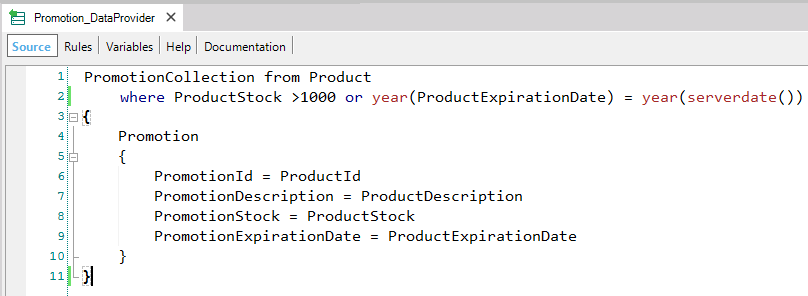

Below are shown samples of use of Dynamic Transactions. 1) Consider the following Product transaction:
Product
{
ProductId*
ProductDescription
ProductStock
ProductExpirationDate
}
Now suppose the company has defined promotions in the following way. They offer a 50% off for: - products for which there are more than 1000 units in stock To always know the current promotions, we suggest to create a Dynamic Transaction (called Promotion) and with its associated Data Provider (Promotion_DataProvider) retrieve the products that meet the requirements for promotion.
Promotion
{
PromotionId*
PromotionDescription
PromotionStock
PromotionExpirationDate
}
We set the properties of the Promotion Transaction:
GeneXus understands that it must not create any physical table associated with the Promotion Transaction, and creates the Data Provider by default (Promotion_DataProvider) with its source initialized with the transaction’s structure: The next step we must follow is to complete the Promotion_DataProvider with the data we wish to load in the attributes of the Promotion Transaction:  The Data Provider, as you can see, is scanning the products that fulfill with the defined conditions to be in the promotion. Then, for each product that fulfills with that conditions, its attributes values are loaded to the Promotion attributes values. Note that we have used the ServerDate Function in order to obtain the current date because variables nor functions that can't be evaluated in the server are not allowed to be used in Data Providers associated with Dynamic Transactions. Once we have thus modeled the Promotion transaction with its associated Data Provider, it is possible to work with the Promotion transaction and its attributes as usual. We could, for example, execute the form of the Promotion transaction to view the current promotions. We could apply also the Work With for Web and the Work With for Smart Devices Patterns to the Promotion transaction. Besides, the Promotion attributes can be used as regular attributes in a transparent way regardless of not having neither physical tables nor physical fields associated. In addition to this, it is possible to mention the Promotion transaction as Base Transaction in For each commands, Data Providers and grids in Web Panels and SD Panels. Why is it advantageous to define a dynamic transaction to obtain the current promotions?
2) Let's suppose that in the same GeneXus KB we have the following transactions:
Customer
{
CustomerId*
CustomerName
CustomerAddress
....
}
Invoice
{
InvoiceId*
InvoiceDate
CustomerId
CustomerName
CustomerAddress
InvoiceAmount
....
}
Some queries that can be requested to you would be: 2.1. For a given period, to know the amount billed per day. Although it is possible to define individual and local solutions to solve each of the above queries, there is a more powerful way to solve the above petitions, and it consists of defining a Dynamic Transaction and executing it in several scenarios to solve the above queries. So, we propose to create a Dynamic Transaction (called Statistics):
Statistics
{
StatisticsDate*
StatisticsTotalAmount
}
We set the properties of the Statistics Transaction: Data Provider property = Yes GeneXus understands that it must not create any physical table associated with the Statistics Transaction, and creates the Data Provider by default (Statistics_DataProvider) with its source initialized with the transaction’s structure. The next step we must follow is to complete the Statistics_DataProvider, with the data we wish to load in the attributes of the Statistics transaction: The Data Provider, as you can see, is scanning the invoices. Each value of invoice date is being used one time only, and it is assigned to the StatisticsDate attribute. For the said date, all the invoice amounts are summarized and the result is assigned to the StatisticsTotalAmount attribute. Then, having the total amounts per date available in Statistics, we will now see that each need can be solved navigating Statistics as our base transaction, and using its attributes as usual. 2.1. For a given period, to know the amount billed per day.
For each Statistics
where StatisticsDate >= &InitialDate
where StatisticsDate >= &FinalDate
Print Printblock1 {StatisticsDate,StatisticsTotalAmount}
Endfor
2.2. For a given date, to know the total amount billed.
For each Statistics
where StatisticsDate = &Date
Print Printblock1 {StatisticsDate,StatisticsTotalAmount}
Endfor
2.3. Best day of the year.
For each Statistics order (StatisticsTotalAmount)
where StatisticsDate.Year() = &Today.Year()
Print Printblock1 {StatisticsDate,StatisticsTotalAmount}
exit
Endfor
|
| Backlinks |
| Toc:Dynamic Transactions |